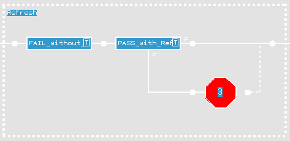

GDDR Memory Device Maintenance Operation
Two testsuites are implemented with exactly the same pattern algorithm, except for the maintenance (refresh) operation being enabled in one suite and disabled in the other.

Doing so, one testsuite will always fail, because a discharge of the internal DRAM capacity will occur.
:apgPattern:
{
:apgProgram: "refr_gapless.prog"
:deviceAccess: "../../device_defs/access_defs/global_b18.dvac"
:deviceArchitecture: "../../device_defs/arch_defs/refr_global.dvar"
:pinMap: "../../device_defs/pin_maps/global.pmap"
:waveformMap: "../../../timing/gddr3_demo.tim:HSM3600"
# :maintenanceOperation: "refresh_test"
:nullData: ~
The memory device maintenance operation solution for all sort of memory devices, offered by the V93000, is described in detail in Memory Device Maintenance Operations in the Memory Test Language (MTL) Programming Reference.